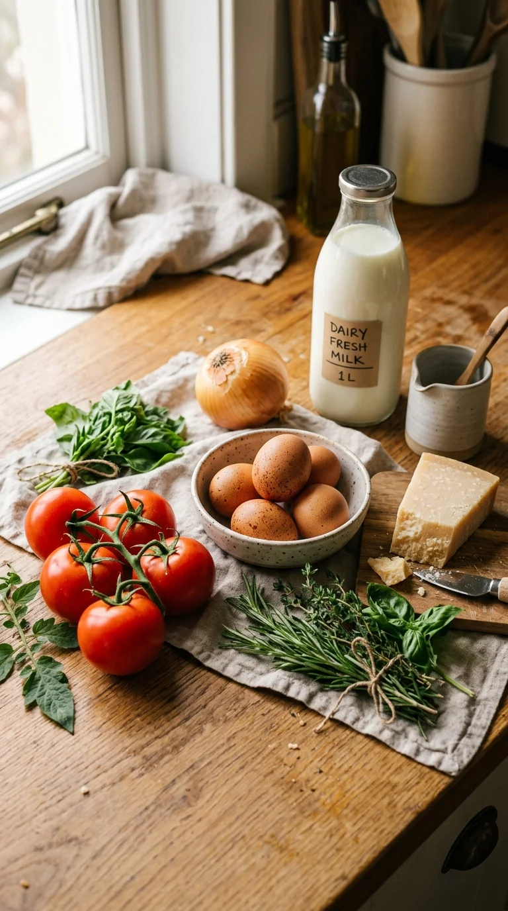
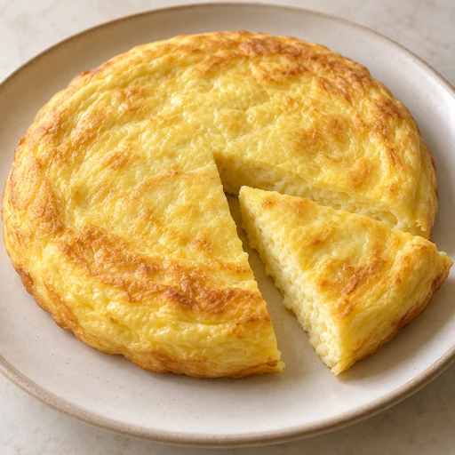
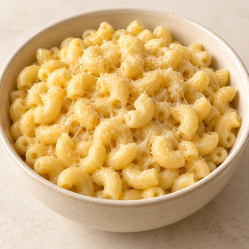
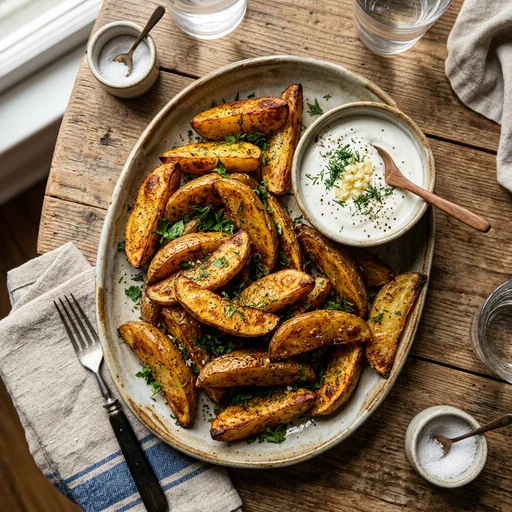

Є продукти, але не знаєш,
що приготувати?
Обери продукти, які маєш, або додай їх за допомогою фото. Nyamo запропонує страви з каталогу рецептів.

✓ Підходить за списком продуктів
Шакшука з томатами

Обери продукти.
Подивись, що можна приготувати.
Познач, що є вдома, і подивись варіанти страв із каталогу. Nyamo покаже точний збіг або чого саме не вистачає.
Що є вдома?
Вибрано: 0Що приготувати
Не хочеш додавати вручну?
Просто сфотографуй.
Сфотографуй те, що маєш на поличці чи на столі. Nyamo запропонує список продуктів для перевірки перед підбором страв.

8 страв у каталозі
✓ Є всі інгредієнти
Ароматна шакшука
Переглянути рецепт
✓ Є всі інгредієнтиПишний молочний омлет
Переглянути рецепт
Зрозумілі кроки
під час готування.
Застосунок показує процес крок за кроком, щоб не губитися у великому тексті рецепта.
Шакшука з томатами
Додай помідори та тушкуй на середньому вогні.
Готуй на середньому вогні приблизно 5–7 хвилин.
На сьогодні точно
є що приготувати.
Від швидкого сніданку до ситної вечері з того, що вже лежить у холодильнику. Прості домашні страви на кожен день.
Шакшука з томатами

Вершкова паста
Менше думати.
Більше готувати.

Хрустка картопля

Домашні сирники
Пишний омлет

Курка з травами
Менше думати.
Більше готувати.
Вершкова паста
20 хв
Домашні сирники
25 хв
Курка з травами
30 хв
Хрустка картопля
35 хв
Пишний омлет
10 хв
Продумано для повсякденного готування
Допомагає визначитися з їжею швидко, без зайвого шуму та складних налаштувань.
Підбір за твоїми продуктами
Вкажи, що є вдома — Nyamo знайде страви й чітко підкаже, якщо чогось бракує для повної порції.
Додавання продуктів за фото
Зроби знімок інгредієнтів на кухні, підтвердь розпізнаний список у діалозі та одразу дивись рецепти.
Прості щоденні страви
Каталог звичних домашніх страв без екзотичних інгредієнтів, який поступово розширюється разом із тестувальниками.
Nyamo починає не зі списку покупок.
Nyamo починає з того, що вже є вдома.
Часті запитання
Ти вказуєш наявні інгредієнти вручну або за допомогою фото. Алгоритм порівнює їх із базою рецептів, враховує необхідні пропорції та показує, які страви можна приготувати повністю, а де не вистачає кількох складників.
Ти можеш завантажити поточну тестову збірку для Android прямо з сайту або надіслати запит на пошту buisness@neoflux.fluxmarketplace.store, щоб отримати доступ та ділитися відгуками.
У поточній бета-версії реєстрація та акаунт не потрібні — твої списки та збережений прогрес зберігаються локально на пристрої. У майбутніх версіях плануються акаунти для синхронізації між пристроями.
Ти фотографуєш продукти на поличці чи столі. Фото відправляється на захищений сервер для розпізнавання, після чого додаток показує діалог перевірки, де ти можеш підтвердити, відредагувати чи прибрати будь-який розпізнаний продукт.
Перегляд уже збережених рецептів та ручний підбір доступні офлайн. Інтернет потрібен для розпізнавання нових продуктів за фотографією. Повноцінний автономний режим для каталогу планується розвивати далі.
Під час відкритого бета-тестування додаток доступний безкоштовно. На етапі публічного релізу планується модель із ненав'язливою рекламою та розглядається підписка на додаткові можливості.
Так, розробка версії для iPhone є в офіційних планах команди. Вона з'явиться після відпрацювання ключових функцій та зворотного зв'язку на Android.